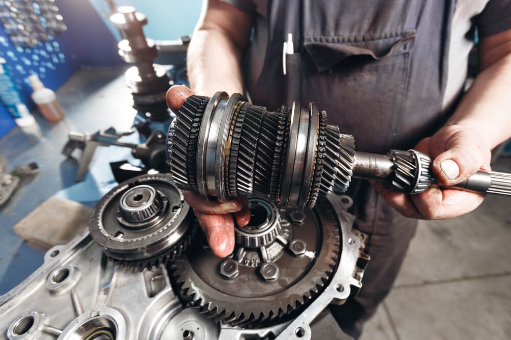

Featured Specialist Service
Transmission rebuilds, reconditioning and repairs
Burwood Mechanics & Transmission is known for diagnosing driveline issues properly and carrying out transmission rebuilds, reconditioning and repairs with care. If your vehicle is slipping, harsh-shifting, leaking or not driving as it should, this is the service the workshop is trusted for.
- Accurate fault diagnosis before major work begins
- Repair and rebuild options explained clearly
- Suitable for modern, classic, performance and 4WD vehicles